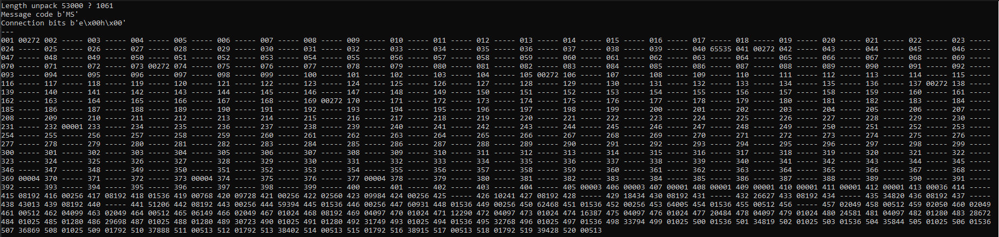

I wanted to add functionality to the PreSonus StudioLive 16 Series III](../PreSonus-StudioLive-16) console. For example, to fade the level of a channel instead of instant (un)muting.
There is no MIDI interface for the console - so we would have to emulate the network messages sent from their UC Surface app.
Connection
The console listens on TCP 53000
KeepAlive packets are sent periodically every 1 second.
Packet
Each packet starts with 0x55 0x43 0x00 0x01
Followed by the length (short) (little-endian) of the payload
Followed by a message code (2 bytes)
Then some sort connection verification __ 0x00 __ 0x00
Message Codes
| API Event Name | ASCII | Byte Code |
|---|---|---|
| KeepAlive | KA | 0x75 0x65 |
| Hello | UM | 0x85 0x77 |
| JSON | JM | 0x74 0x77 |
| Setting | PV | 0x80 0x86 |
| Settings2 | PL | 0x80 0x76 |
| FileResource | FR | 0x70 0x82 |
| FileResource2 | FD | 0x70 0x68 |
| UNKNOWN_REPLY | BO | 0x66 0x79 |
| CompressedUnknown | CK | 0x67 0x75 |
Metering
Metering data is transmitted via UDP from the console, to a port requested by the client.
The metering data looks something like this:
| 0-3 | 4-5 | 6-7 | 7-11 | 12-15 | 16-19 | 20… |
|---|---|---|---|---|---|---|
| head | length | code | conn | levl | ??? | data |
The length bytes don’t seem to match up with the size of the payload.
And I don’t know that bytes 16-19 refer to
